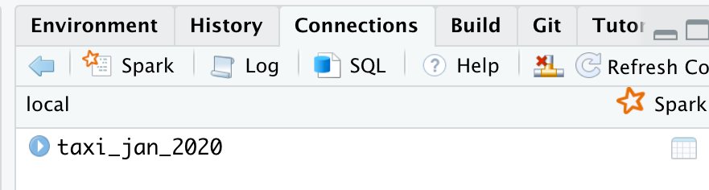
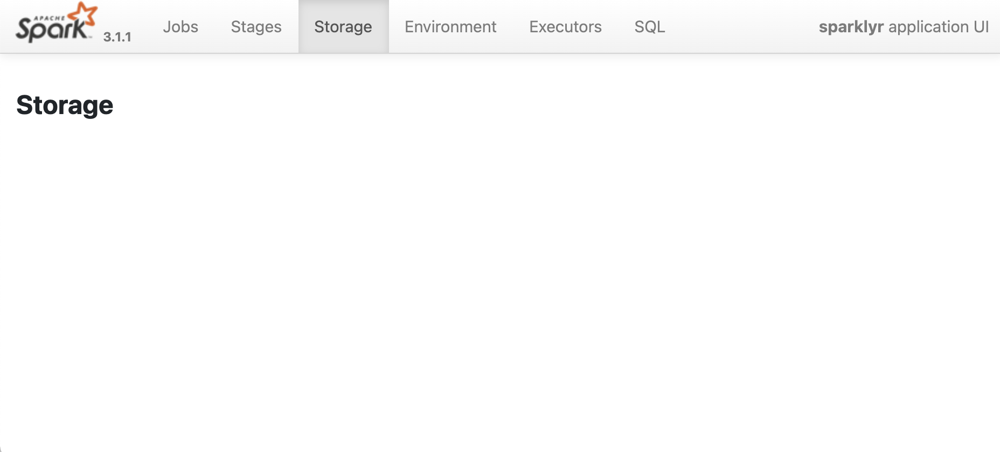
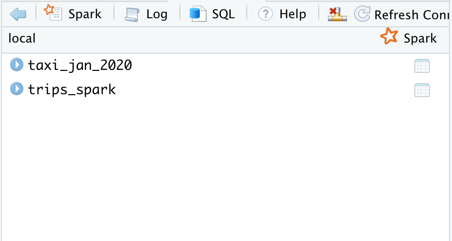
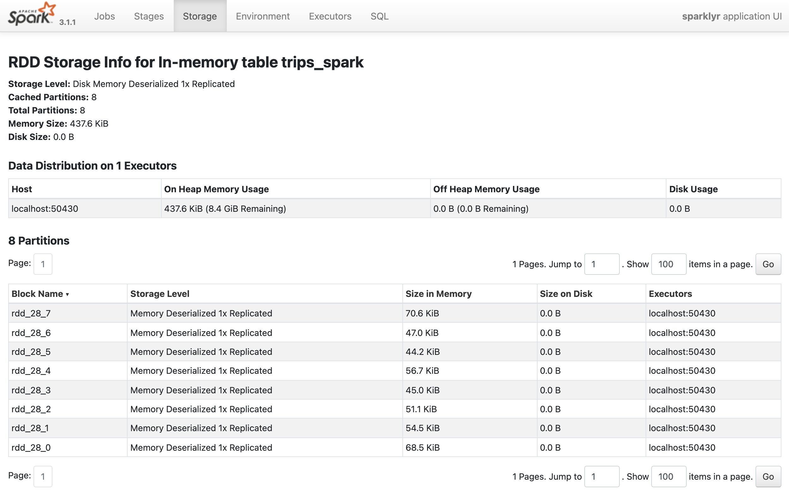
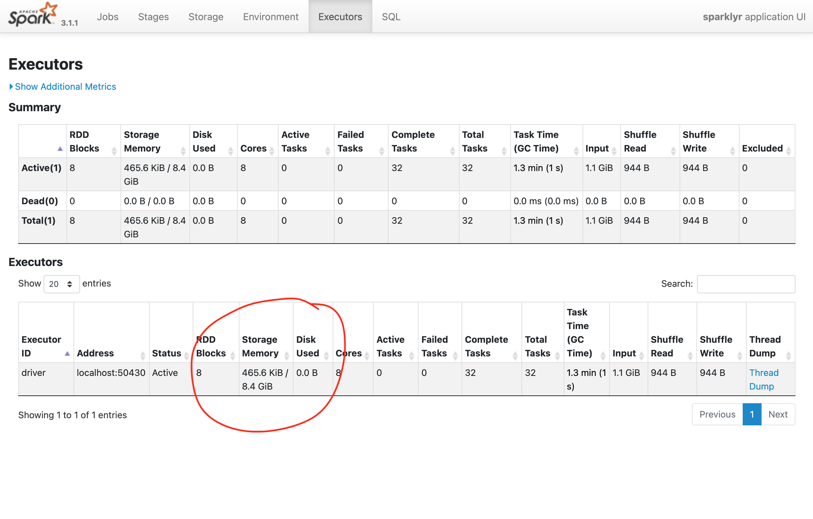
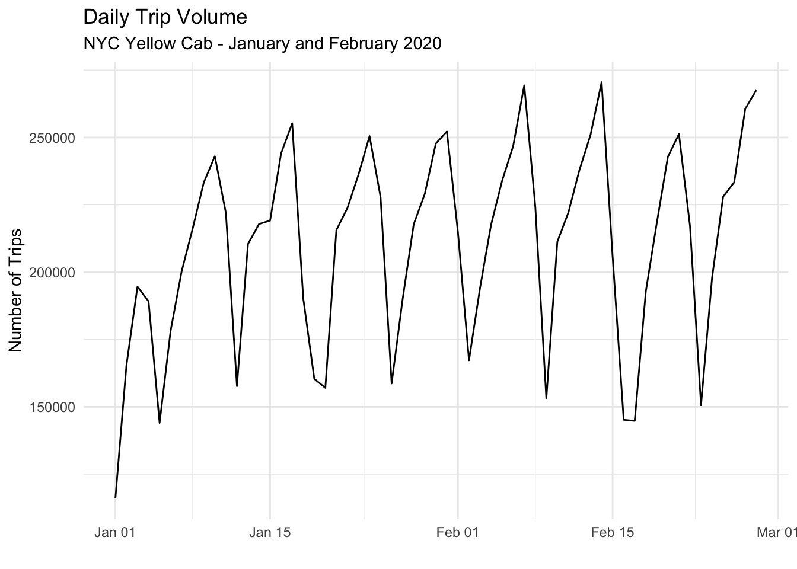

if(!file.exists("jan_2020.parquet")) {
download.file(
"https://d37ci6vzurychx.cloudfront.net/trip-data/yellow_tripdata_2020-01.parquet",
"jan_2020.parquet",
mode = "wb"
)
}
if(!file.exists("feb_2020.parquet")) {
download.file(
"https://d37ci6vzurychx.cloudfront.net/trip-data/yellow_tripdata_2020-02.parquet",
"feb_2020.parquet",
mode = "wb"
)
}Understanding Spark Caching
Introduction
Spark also supports pulling data sets into a cluster-wide in-memory cache. This is very useful when data is accessed repeatedly, such as when querying a small dataset or when running an iterative algorithm like random forests. Since operations in Spark are lazy, caching can help force computation. sparklyr tools can be used to cache and un-cache DataFrames. The Spark UI will tell you which DataFrames and what percentages are in memory.
By using a reproducible example, we will review some of the main configuration settings, commands and command arguments that can be used that can help you get the best out of Spark’s memory management options.
Preparation
Download Test Data
Because of their size, we will use trip data provided by the NYC Taxi & Limousine Commission. Each file represents a month’s worth of trips. We will download two files, the ones for January and February 2020.
Start a Spark session
A local deployment will be used for this example.
library(sparklyr)
library(dplyr)
library(ggplot2)
# Customize the connection configuration
conf <- spark_config()
conf$`sparklyr.shell.driver-memory` <- "16G"
# Connect to Spark
sc <- spark_connect(master = "local", config = conf)The Memory Argument
In the spark_read_… functions, the memory argument controls if the data will be loaded into memory as an RDD. Setting it to FALSE means that Spark will essentially map the file, but not make a copy of it in memory. This makes the spark_read_parquet() command run faster, but the trade off is that any data transformation operations will take much longer.
spark_read_parquet(
sc,
"taxi_jan_2020",
"jan_2020.parquet",
memory = FALSE
)
#> # Source: spark<taxi_jan_2020> [?? x 19]
#> VendorID tpep_pickup_datetime tpep_dropoff_date…¹ passe…²
#> <dbl> <dttm> <dttm> <dbl>
#> 1 1 2019-12-31 18:28:15 2019-12-31 18:33:03 1
#> 2 1 2019-12-31 18:35:39 2019-12-31 18:43:04 1
#> 3 1 2019-12-31 18:47:41 2019-12-31 18:53:52 1
#> 4 1 2019-12-31 18:55:23 2019-12-31 19:00:14 1
#> 5 2 2019-12-31 18:01:58 2019-12-31 18:04:16 1
#> 6 2 2019-12-31 18:09:44 2019-12-31 18:10:37 1
#> 7 2 2019-12-31 18:39:25 2019-12-31 18:39:29 1
#> 8 2 2019-12-18 09:27:49 2019-12-18 09:28:59 1
#> 9 2 2019-12-18 09:30:35 2019-12-18 09:31:35 4
#> 10 1 2019-12-31 18:29:01 2019-12-31 18:40:28 2
#> # … with more rows, 15 more variables: trip_distance <dbl>,
#> # RatecodeID <dbl>, store_and_fwd_flag <chr>,
#> # PULocationID <dbl>, DOLocationID <dbl>,
#> # payment_type <dbl>, fare_amount <dbl>, extra <dbl>,
#> # mta_tax <dbl>, tip_amount <dbl>, tolls_amount <dbl>,
#> # improvement_surcharge <dbl>, total_amount <dbl>,
#> # congestion_surcharge <dbl>, airport_fee <int>, and …In the RStudio IDE, the taxi_jan_2020 table now shows up in the Spark tab.

To access the Spark Web UI, click the Spark button in the RStudio Spark Tab. As expected, the Storage page shows no tables loaded into memory.

Loading Less Data into Memory
Using the pre-processing capabilities of Spark, the data will be transformed before being loaded into memory. In this section, we will continue to build on the example started in the previous section
Lazy Transform
The following dplyr script will not be immediately run, so the code is processed quickly. There are some check-ups made, but for the most part it is building a Spark SQL statement in the background.
trips_table <- tbl(sc,"taxi_jan_2020") %>%
filter(trip_distance > 20) %>%
select(VendorID, passenger_count, trip_distance)Register in Spark
sdf_register() will register the resulting Spark SQL in Spark. The results will show up as a table called trip_spark. But a table of the same name is still not loaded into memory in Spark.
sdf_register(trips_table, "trips_spark")
#> # Source: spark<trips_spark> [?? x 3]
#> VendorID passenger_count trip_distance
#> <dbl> <dbl> <dbl>
#> 1 2 1 23.5
#> 2 1 2 22.8
#> 3 2 2 37.6
#> 4 2 4 20.3
#> 5 1 2 29.4
#> 6 2 1 25.9
#> 7 2 3 22.1
#> 8 2 1 21.0
#> 9 2 3 20.1
#> 10 2 1 32.5
#> # … with more rows
Cache into Memory
The tbl_cache() command loads the results into an Spark RDD in memory, so any analysis from there on will not need to re-read and re-transform the original file. The resulting Spark RDD is smaller than the original file because the transformations created a smaller data set than the original file.
tbl_cache(sc, "trips_spark")
Driver Memory
In the Executors page of the Spark Web UI, we can see that the Storage Memory is at about half of the 16 gigabytes requested. This is mainly because of a Spark setting called spark.memory.fraction, which reserves by default 40% of the memory requested.

Process on the fly
The plan for this exercise is to read the January file, combine it with the February file and summarize the data without bringing either file fully into memory.
spark_read_parquet(sc, "taxi_feb_2020" , "feb_2020.parquet", memory = FALSE)
#> # Source: spark<taxi_feb_2020> [?? x 19]
#> VendorID tpep_pickup_datetime tpep_dropoff_date…¹ passe…²
#> <dbl> <dttm> <dttm> <dbl>
#> 1 1 2020-01-31 18:17:35 2020-01-31 18:30:32 1
#> 2 1 2020-01-31 18:32:47 2020-01-31 19:05:36 1
#> 3 1 2020-01-31 18:31:44 2020-01-31 18:43:28 1
#> 4 2 2020-01-31 18:07:35 2020-01-31 18:31:39 1
#> 5 2 2020-01-31 18:51:43 2020-01-31 19:01:29 1
#> 6 1 2020-01-31 18:15:49 2020-01-31 18:20:48 2
#> 7 1 2020-01-31 18:25:31 2020-01-31 18:50:22 2
#> 8 1 2020-01-31 18:11:15 2020-01-31 18:24:29 1
#> 9 2 2020-01-31 18:58:26 2020-01-31 19:02:26 1
#> 10 2 2020-01-31 18:03:57 2020-01-31 18:48:10 1
#> # … with more rows, 15 more variables: trip_distance <dbl>,
#> # RatecodeID <dbl>, store_and_fwd_flag <chr>,
#> # PULocationID <dbl>, DOLocationID <dbl>,
#> # payment_type <dbl>, fare_amount <dbl>, extra <dbl>,
#> # mta_tax <dbl>, tip_amount <dbl>, tolls_amount <dbl>,
#> # improvement_surcharge <dbl>, total_amount <dbl>,
#> # congestion_surcharge <dbl>, airport_fee <int>, and …Union and Transform
The union() command is akin to the dplyr::bind_rows() command. It will allow us to append the February file to the January file, and as with the previous transform, this script will be evaluated lazily.
passenger_count <- tbl(sc, "taxi_jan_2020") %>%
union(tbl(sc, "taxi_feb_2020")) %>%
mutate(pickup_date = as.Date(tpep_pickup_datetime)) %>%
count(pickup_date)Collect into R
When receiving a collect() command, Spark will execute the SQL statement and send the results back to R in a data frame. In this case, R only loads 51 observations into a data frame called passenger_count.
passenger_count <- passenger_count %>%
collect()Plot in R
Now the smaller data set can be plotted
passenger_count %>%
filter(pickup_date >= "2020-01-01", pickup_date <= "2020-02-28") %>%
ggplot() +
geom_line(aes(pickup_date, n)) +
theme_minimal() +
labs(title = "Daily Trip Volume",
subtitle = "NYC Yellow Cab - January and February 2020",
y = "Number of Trips",
x = ""
)
spark_disconnect(sc)